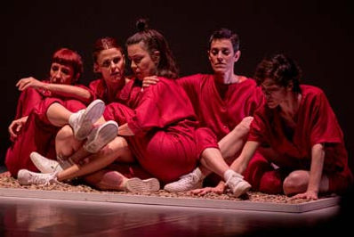

Jueves 11, Viernes 12 y Sábado 13 de julio | 8:30 P.M.
Jueves 11: Foro después de la obra
Jueves 11: Foro después de la obra
LA RARA | Sevilla, España
ÓRGIA
Escrita y dirigida por Rocío Hoces y Julia Moyano
Órgia es un acto ecléctico que reúne historias de vidas secuestradas y maltrechas de mujeres que ya no lo pueden contar, relatos íntimos de quiénes lo vivieron y quieren contarlo y una verbena de voces de mujeres ávidas de ser cuerpo, uno sólo, y hacerlo saltar.
Westchester Cultural Arts Center | 7930 S.W. 40th Street (Tropical Park), Miami
Drama